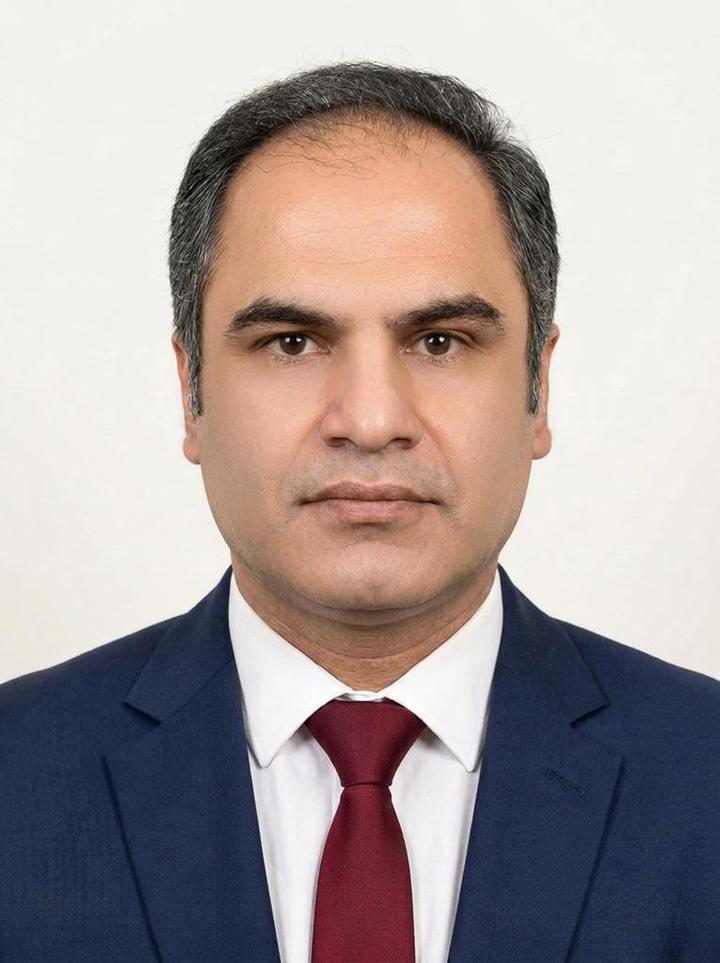

درباره من
کمی بیشتر درباره من
این صفحه برای معرفی مسیر حرفهای و زمینههای فعالیت من در نظر گرفته شده است.

امید کاکایی
معرفی کوتاه
[قابل تکمیل: معرفی کوتاه، زمینه فعالیت و علایق حرفهای تأییدشده را اینجا بنویسید.]
اطلاعات این بخش پس از تأیید تکمیل میشود.